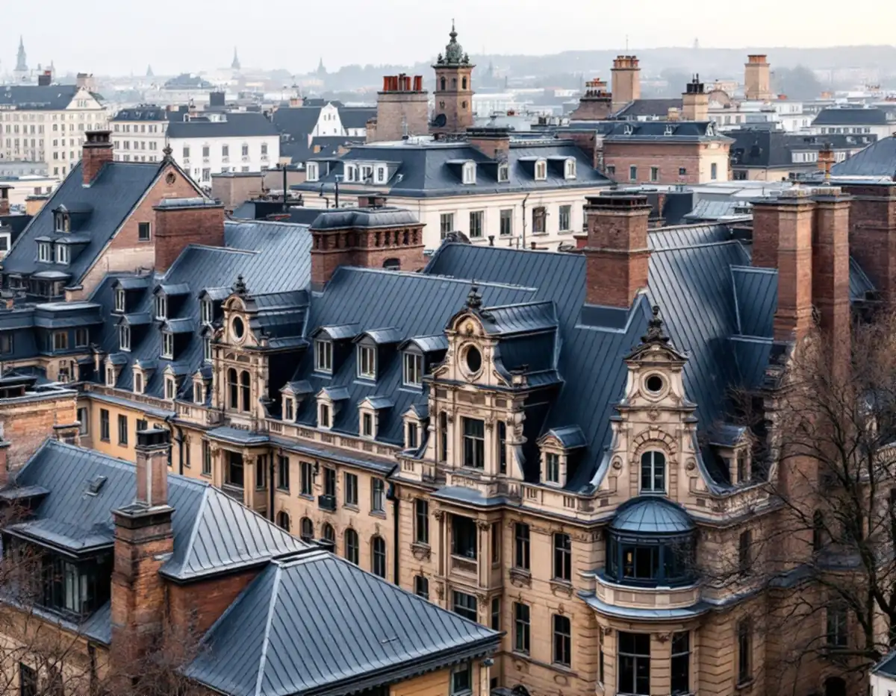
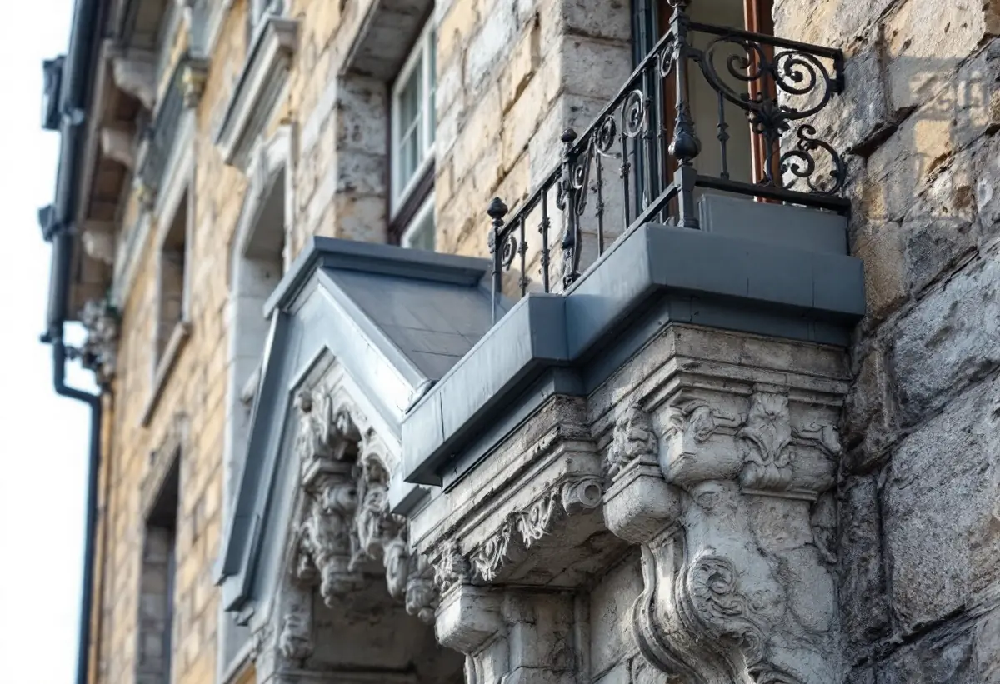
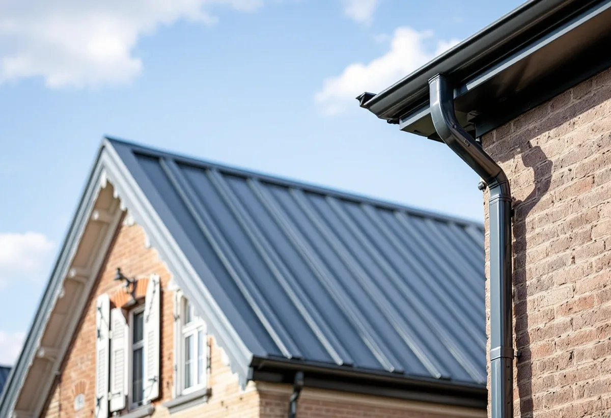

Platsbesök
Gratis besök på taket, på vinden och på balkongerna.
Östermalms tak är en del av den stadssiluett som syns från vattnet och från höjderna runt innerstaden. Det gör att även ett rent underhållsjobb på plåten kan bli en fråga om utseende. Geal Entreprenad AB har egna plåtslagare som lagar och lägger om takplåt, byter plåt på balkonger och tar fram underlaget till föreningen och Stadsmuseet.

Översiktsplanens riksintressedel beskriver att grundanslaget i dagens stadssiluett utgörs av stenstadens stora, sammanhållna bebyggelsemassa på Norrmalm och Östermalm, som till största delen uppfördes under 1800-talets senare del. Bebyggelsen är enligt dokumentet också fonden mot Gamla stan och innerstadens stadsfronter.
Stenstadens tak beskrivs som sluttande, oftast plåttäckta och med en lutning upp till 45 grader från fasaden. När taklandskapet nämns som karaktärsdrag handlar det om helheten – hur taken samspelar kvarter för kvarter. En omlagd plåt i fel kulör eller med fel falsning kan därför märkas även om resten av huset är orört.
Dokumentet skriver också att siluetten i stadens centrala delar är känslig och att byggnader från tiden före andra världskriget ofta har en viktig roll för upplevelsen av Stockholm som historisk stadsmiljö, vilket gör att påbyggnader i regel är olämpliga. För plåtslagaren betyder det att vi i första hand behåller takets form och arbetar med det material som redan ligger.

Stockholms stad räknar byte av kulör eller material på taket som en fasadändring, och på ett flerbostadshus krävs bygglov när taket vetter mot allmän plats. Därtill kräver staden bygglov för åtgärder som annars kan vara lovbefriade om huset ligger inom riksintresse för kulturmiljövården, som visas med blå ring på Stadsmuseets karta, eller om huset är blå- eller grönmarkerat.
Vi börjar därför varje uppdrag på Östermalm med att titta på kartan tillsammans med föreningen. Ska plåten bara lagas med samma material och utförande blir frågan en annan än om taket ska få en ny kulör eller en ny typ av plåt. Staden påpekar att det också finns hus som ännu inte är inventerade, och då kan museet behöva göra en bedömning.
Har balkongerna plåt på ovansidan och på listerna under är det plåten som skyddar plattan. När plåten rostar eller lossnar rinner vatten in i plattan, och då är det dags att byta. Staden skriver att en balkong är en viktig del av byggnadens arkitektur, och att ett räcke ska vara minst 1,1 meter högt när nya balkonger byggs. Stadens balkongvägledning är enligt staden inte uppdaterad efter lagändringarna den 1 december 2025.
Vi byter balkongplåt och plåt på lister, gesimser och fönsterbleck så att utformningen stämmer med det som fanns. Där fasaden också behöver åtgärdas samordnar vi med fasadrenovering på Östermalm, så att ställningen bara behöver stå uppe en gång.
I Hedvig Eleonora församling finns enligt stadens områdesfakta för 2025 7 344 bostäder, varav 5 164 bostadsrätter och 2 110 övriga hyresrätter. Allmännyttan har bara 68 lägenheter där. Plåttaket är alltså i de flesta fall en fråga för en bostadsrättsförening.
Vi lämnar en beskrivning med foton av taket, en lista över vad som behöver göras nu och vad som kan vänta, och plåtdetaljer som kan användas i en bygglovsansökan. Mer om tjänsten finns under plåtslagare.

Gratis besök på taket, på vinden och på balkongerna.
Vi går igenom Stadsmuseets klassning med föreningen.
Lagning eller omläggning med samma material och utförande.
Underlag när material eller kulör ska ändras.
Takplåt, balkongplåt, lister och bleck.
Foton och beskrivning till styrelsen.
Bor du i bostadsrätt ger plåtarbeten på husets tak, hängrännor och stuprör inget rotavdrag enligt Skatteverket. Avdraget i en bostadsrätt gäller arbete innanför lägenhetens väggar, tak och golv som du själv ansvarar för enligt stadgarna, och taket är föreningens sak.
Äger du ett småhus räknar Skatteverket däremot plåttak, hängrännor och stuprör som rotarbete, och Geal drar då avdraget direkt på fakturan.
Takets yta och form, om plåten lagas eller läggs om, balkonger, lister och bleck, ställning mot gatan, skydd för entréer och trottoar och om bygglovsunderlag behövs. Efter ett gratis platsbesök får föreningen ett skriftligt kostnadsförslag.
Plåttak, hängrännor och beslag.
Plåtslagare i Stockholm →Takbyte, takbesiktning och plåtarbeten.
Takläggare på Östermalm →Stenstad, Lärkstaden, Diplomatstaden och Gärdet.
Takrenovering på Östermalm →Kulturvärden, förvanskningsförbud och klassning.
Badrumsrenovering på Östermalm →Slå ihop två lägenheter.
Byggföretag på Östermalm →Husets ursprungliga kulör.
Fasadmålning på Östermalm →Gatufasad, gårdsfasad och lovfrågan.
Fasadrenovering på Östermalm →Stenstaden, Lärkstaden och villorna.
Fönsterbyte på Östermalm →Fönster och glas i Gärdets 1930-talshus.
Fönsterrenovering på Östermalm →Mönsterparkett, lack och olja.
Golvläggare på Östermalm →Slipa om eller underhålla lackade golv.
Golvslipning på Östermalm →Stora lägenheter och kulturvärden.
Köksrenovering på Östermalm →Limfärg i taken, dekor och lov.
Målare på Östermalm →Lagning av dörrar, paneler och fasta snickerier.
Snickare på Östermalm →Nytt tak med taksäkerhet och snörasskydd.
Takbyte på Östermalm →Klassade våningar och bostadsrätt.
Tapetsering på Östermalm →Renovera hela lägenheten.
Totalrenovering på Östermalm →